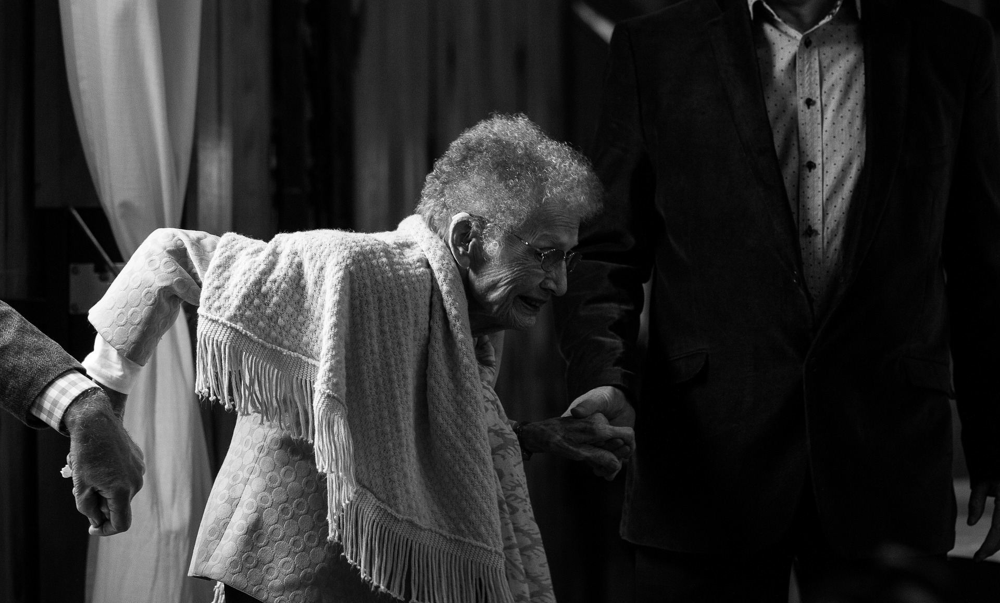

Os idosos vulneráveis enfrentam uma série de desafios que exigem nossa atenção e ação. Esses desafios podem ser
resultado de fatores como pobreza, isolamento social, limitações físicas ou cognitivas, entre outros. É
fundamental compreender essas dificuldades e buscar soluções efetivas para proteger essa parcela da população
contra a violência.
Um dos principais desafios enfrentados pelos idosos vulneráveis é a pobreza. Muitos idosos vivem com renda
limitada, dependendo de aposentadorias ou pensões que muitas vezes não são suficientes para atender às suas
necessidades básicas. A falta de recursos financeiros pode levar a situações de vulnerabilidade, colocando-os em
maior risco de violência e abuso.
Além da pobreza, o isolamento social é outro fator que contribui para a vulnerabilidade dos idosos. Muitos
idosos
vivem sozinhos ou têm uma rede social limitada, o que pode levar à solidão e ao aumento do risco de abuso. A
falta
de interações sociais regulares pode torná-los alvos fáceis para pessoas mal-intencionadas que se aproveitam de
sua fragilidade.

As limitações físicas e cognitivas também representam um desafio significativo para os idosos vulneráveis. À
medida que envelhecemos, é comum enfrentarmos problemas de saúde e perda de capacidades físicas e mentais. Essas
limitações podem dificultar a realização de tarefas cotidianas, como cuidar da própria higiene, tomar
medicamentos
corretamente ou até mesmo se locomover com segurança. Os idosos vulneráveis podem ficar dependentes de terceiros
para suprir essas necessidades básicas, o que os torna mais suscetíveis a abusos.
É importante ressaltar que os desafios enfrentados pelos idosos vulneráveis não são apenas individuais, mas
também
estruturais. Muitas vezes, a falta de políticas públicas adequadas e a negligência por parte das autoridades
contribuem para a perpetuação dessas condições de vulnerabilidade. A falta de acesso a serviços de saúde,
moradia
adequada, transporte, segurança e programas sociais adequados dificulta ainda mais a vida dos idosos
vulneráveis.
Para proteger os idosos vulneráveis, é necessário adotar uma abordagem abrangente. Primeiramente, é fundamental
fortalecer a rede de apoio social, promovendo a participação comunitária e a criação de programas que incentivem
a
interação entre os idosos e a sociedade em geral. Essas iniciativas podem envolver a criação de centros
comunitários, grupos de atividades e visitas regulares a idosos que vivem sozinhos.
Além disso, é necessário melhorar as políticas públicas voltadas para a proteção dos idosos vulneráveis. Isso
inclui garantir o acesso a cuidados de saúde adequados, implementar programas de moradia acessível, promover a
inclusão social por meio de transporte adaptado e seguro, e estabelecer mecanismos eficientes de denúncia e
proteção contra a violência.